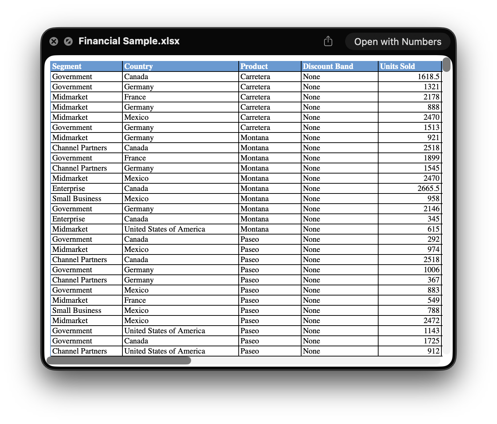

Quick Look
Calling QuickLook a text preview tool or a cool tech demo doesn’t nearly do it justice.


It can render anything from calendar invites to excel spreadsheets, and has a powerful plugin system to enable the preview of many complex file formats that are too niche to be supported by default. It genuinely makes my computer feel 10 times faster when I am scanning through a folder, trying to figure out which file I wanted to open.